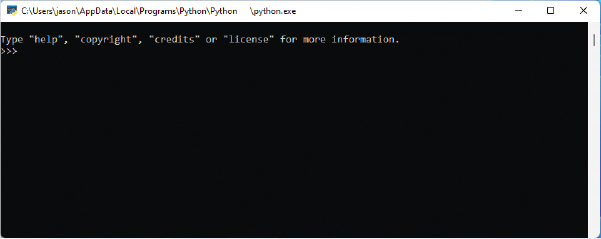

C
Troubleshooting

In this appendix, you’ll find information on how to fix some less common problems with Python. If you happen to be running older versions of some operating systems, you may experience these issues.
“TK” Errors Importing Turtle on Ubuntu
If you’re using an older version of Ubuntu Linux and get errors when you import turtle, you might need to install a piece of software called tkinter . To do so, open the Ubuntu Software Center and enter python-tk in the search box. “Tkinter—Writing Tk Applications with Python” should appear in the window. Click Install to install this package. This shouldn’t be required if you’re running a more recent version of Ubuntu—if possible, you should get the owner of your computer to update it for you.
Attribute Error Using Turtle
Some new programmers experience strange attribute errors when trying to use turtle:
>>> import turtle >>> t = turtle.Turtle() Traceback (most recent call last): File "<stdin>", line 1, in <module> AttributeError: module 'turtle' has no attribute 'Turtle'
The most typical cause of this error is when you have created a file called turtle.py in your home folder. In this case, when you enter import turtle , you’re getting the file you created and not Python’s turtle module. If you delete or rename that file, the correct module should import correctly.
Problems Running Turtle
If you have problems when using the turtle module, and the turtle window itself doesn’t appear to be working, try using the Python console instead of the Python Shell, as follows:
-
In Windows, enter
Python
in the search box and click
Python 3.1
x
in the Apps list. You can use the Windows command prompt instead (click the Windows icon and type
cmd
in the search box). When that opens, you’ll need to enter the path to a program called
python.exe
. If you’ve installed Python 3.10, the path might be something like this:
AppData\Local\Programs\Python \Python310\python.exe
. However, it very much depends on what version of Python you’ve installed, so this method should probably be the last resort (you can see the result of running this in
Figure C-1
).

Figure C-1: Running the Python console from Windows command prompt
- In macOS, click the Spotlight Search icon at the top-right corner of the screen (it should look like a magnifying glass) and enter Terminal in the input box. Then enter python3 when the terminal opens.
- In Ubuntu Linux, open the terminal from your Show Applications menu and enter python3.10 (note that your version number may be different).
- In Raspberry Pi, click the Terminal icon on the menu bar at the top, or click Terminal in the Accessories menu and enter /usr/local/opt/python-3.10.0 (this will work only if you followed the Raspberry Pi installation instructions in Chapter 1 ; note that your version number may be different).
The Python console is similar to the Python Shell (IDLE), but it doesn’t have syntax highlighting (colored text), easy save options, and other beneficial features. However, if you’re having problems running turtle in the Python Shell, using the Python console might help.
Class Takes No Arguments
A common error some readers hit is a TypeError , usually first seen in Chapter 11 . You might see an error similar to the following:
b = Ball(canvas, 'red') Traceback (most recent call last): File "/usr/lib/python3.10/idlelib/run.py", line 573, in runcode exec(code, self.locals) File "<pyshell#4>", line 1, in <module> TypeError: Ball() takes no arguments
The reason for this is generally missing underscores. The Ball class is first defined like this:
class Ball: def __init__(self, canvas, color): self.canvas = canvas self.id = canvas.create_oval(10, 10, 25, 25, fill=color) self.canvas.move(self.id, 245, 100)
However, if you mistype the __init__ function with a single underscore on either side ( _init_ ), Python will no longer recognize it as an initialization function. This is why calling Ball(...) with any arguments results in an error—Python thinks there is no initialization function to call (in fact, it creates a default initialization function for you that has no parameters).